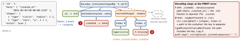

swift · folio
In one line: Codable = Encodable & Decodable. The compiler synthesises
CodingKeys + init(from:) + encode(to:) from the stored properties;
you write them by hand when the JSON’s shape differs from the type’s. A
Decoder hands out containers (keyed · unkeyed · single-value) and every
failure is a DecodingError whose codingPath says where.
Download PDF Print view LaTeX source


The rules
- Synthesis: every stored property Codable (computed ignored). In an extension only in the same file; a non-
finalclass can’t getDecodablefrom one (init(from:)must berequired). CodingKeysis all-or-nothing: list a property or give it a default (then never decoded). Synthesised decoding ignores defaults:var n = 0still throwskeyNotFound; only optionals tolerate a missing key.- Enums (5.5): raw-value = single value; associated values = keyed by case:
circle(radius:)→{"circle":{"radius":1}}(unlabeled"_0") — rarely the API’s shape. - Containers: keyed · unkeyed (a cursor) · single-value;
nestedContainer(keyedBy:forKey:)/nestedUnkeyedContainerwalk into JSON with no nested type. Dynamic keys:struct AnyKey: CodingKey+c.allKeys. - Strategies:
date*(default.deferredToDate= seconds since 2001;.iso8601,.secondsSince1970,.millisecondsSince1970,.formatted,.custom) ·data*(default.base64) ·key*·nonConformingFloat*(default.throwonnan). decoder.userInfo: inject a Core Data context / schema version.
| JSON has… | decode | decodeIfPresent | synthesised T? |
|---|---|---|---|
| key absent | keyNotFound | nil | nil |
null | valueNotFound | nil | nil |
| wrong type | typeMismatch | throws too | throws |
Example — flatten, default, discriminator
enum Shape: Decodable { // "type" picks the case
case circle(r: Double), rect(w: Double, h: Double)
enum K: String, CodingKey { case type, radius, w, h }
init(from d: Decoder) throws {
let c = try d.container(keyedBy: K.self)
func num(_ k: K) throws -> Double {
try c.decode(Double.self, forKey: k) }
switch try c.decode(String.self, forKey: .type) {
case "circle": self = .circle(r: try num(.radius))
case "rect": self = .rect(w: try num(.w), h: try num(.h))
case let t: throw DecodingError.dataCorruptedError(
forKey: .type, in: c, debugDescription: "type \(t)") }
}
}
// in Post.init(from:) -- flatten + default for a missing key
let m = try c.nestedContainer(keyedBy: M.self, forKey: .meta)
created = try m.decode(Date.self, forKey: .created)
tags = try c.decodeIfPresent([String].self, forKey: .tags) ?? []Example — dates with and without fractions
let frac = ISO8601DateFormatter()
frac.formatOptions = [.withInternetDateTime,
.withFractionalSeconds]
let plain = ISO8601DateFormatter() // rejects ".123"
decoder.dateDecodingStrategy = .custom { d in
let c = try d.singleValueContainer()
let s = try c.decode(String.self)
if let x = frac.date(from: s) { return x }
if let x = plain.date(from: s) { return x }
throw DecodingError.dataCorruptedError(in: c,
debugDescription: "bad date \(s)") }Traps
.iso8601rejects fractional seconds, and a formatter with.withFractionalSecondsrejects strings without them — try both..formatted(DateFormatter)needslocale = en_US_POSIX+ an explicittimeZone, or a 12-hour/Buddhist-calendar device breaks it.- Snake case + acronyms:
user_idis converted touserIdbefore matching, souserIDnever matches →case userID = "userId". - One bad element fails the whole array. Lossy decoding: wrap each element in a box whose
initdoestry?— never a baretry?in an unkeyed loop: a failed decode does not advance the cursor → infinite loop. - Dictionary keys: only
String/Intkeys encode as a JSON object;[MyEnum: V](evenString-backed) becomes a flat array["a",1,"b",2]unless the key adoptsCodingKeyRepresentable(5.6). [any Animal]cannot be decoded — no staticinit(from:)on an existential. Decode an enum, then map.- Subclass of a Codable class: inherits
init(from:)/encode(to:), so new stored properties (with defaults) are silently skipped. Override both; callsuper.init(from: c.superDecoder())orsuper.encode(to:). - Persisted Codable = a schema. A new non-optional field breaks decoding of old data: make new fields optional or
decodeIfPresent+ default; version it.
Remember
“Shape differs → containers; kind varies → discriminator enum; failure → read the path.”